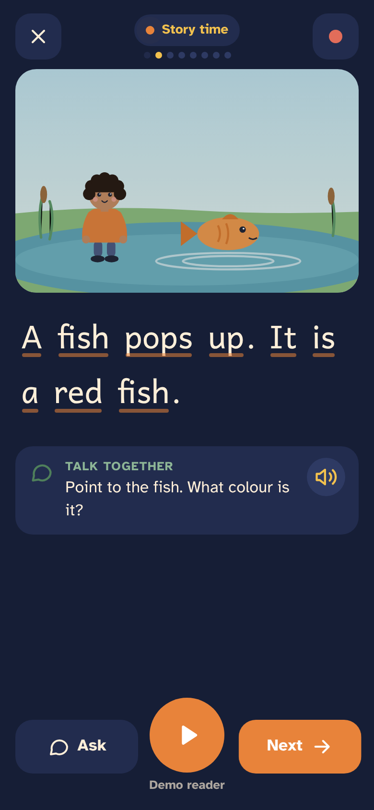
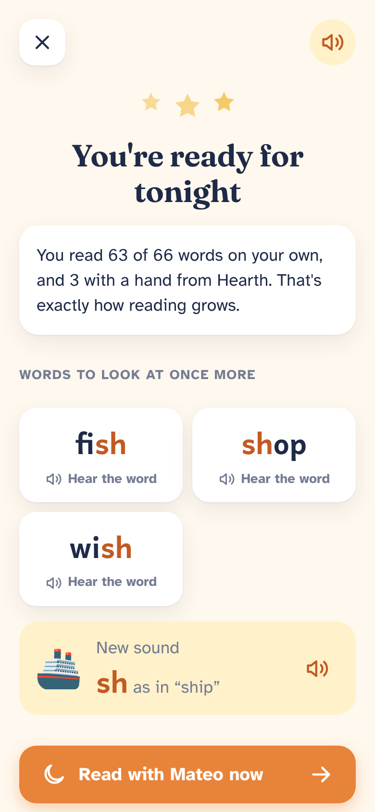
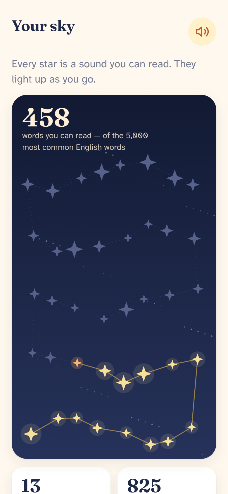
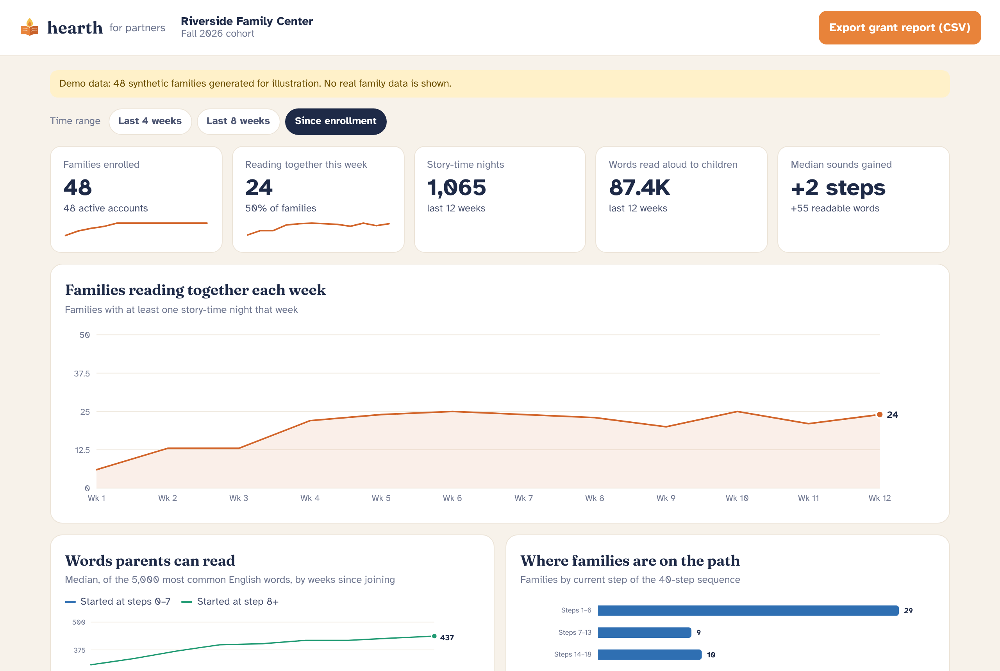

<title>Hearth</title>
<meta name="claude:viewport-fit-sides" content="cover">
<meta name="description" content="Hearth is a private reading coach for parents who struggle to read. Practise tonight's bedtime story alone, then read it to your child.">
<link rel="preconnect" href="https://fonts.googleapis.com">
<link rel="preconnect" href="https://fonts.gstatic.com" crossorigin>
<link rel="stylesheet" href="https://fonts.googleapis.com/css2?family=Andika:wght@400;700&family=Atkinson+Hyperlegible:wght@400;700&family=Fraunces:opsz,wght@9..144,400..700&display=swap">
<style>
/* Layout concept: a bedtime that brightens as you scroll. Night bands (the dark room, the lamp)
   alternate with paper bands (the open picture book). One committed look; colors set explicitly. */
:root {
  color-scheme: dark;
  --night: #131A2E; --night-2: #1B2440; --night-3: #27315A; --star: #F6E7B4;
  --lamp: #F4B860; --ember: #E8833A; --ember-deep: #B9551F;
  --paper: #FBF2E4; --paper-2: #F3E6D2; --ink: #1E2A47; --ink-2: #4A5370;
  --on-night: #F4EBDD; --on-night-2: #B9BED0;
  --display: 'Fraunces', Georgia, 'Times New Roman', serif;
  --body: 'Atkinson Hyperlegible', system-ui, -apple-system, 'Segoe UI', sans-serif;
  --story: 'Andika', 'Atkinson Hyperlegible', system-ui, sans-serif;
  --wrap: 1120px;
}
* { box-sizing: border-box; }
html { scroll-behavior: smooth; }
body { margin: 0; background: var(--night); color: var(--on-night); font: 18px/1.6 var(--body); -webkit-font-smoothing: antialiased; }
img { max-width: 100%; height: auto; display: block; }
a { color: inherit; }
h1, h2, h3 { font-family: var(--display); font-weight: 600; letter-spacing: -0.015em; line-height: 1.08; margin: 0; text-wrap: balance; }
h2 { font-size: clamp(32px, 4.4vw, 54px); }
h3 { font-size: 23px; line-height: 1.2; letter-spacing: -0.005em; }
p { margin: 0; }
.wrap { max-width: var(--wrap); margin: 0 auto; padding-left: max(20px, env(safe-area-inset-left, 0px)); padding-right: max(20px, env(safe-area-inset-right, 0px)); }
.band { padding-block: clamp(64px, 9vw, 120px); }
.night { background: var(--night); color: var(--on-night); }
.night-2 { background: var(--night-2); color: var(--on-night); }
.paper { background: var(--paper); color: var(--ink); }
.eyebrow { font-size: 14px; font-weight: 700; letter-spacing: .12em; text-transform: uppercase; color: var(--lamp); }
.paper .eyebrow { color: var(--ember-deep); }
.lead { font-size: clamp(19px, 2vw, 22px); line-height: 1.55; max-width: 62ch; }
.night .lead, .night-2 .lead { color: var(--on-night-2); }
.paper .lead { color: var(--ink-2); }
.btn { display: inline-flex; align-items: center; gap: 10px; min-height: 54px; padding: 0 24px; border-radius: 16px; font-weight: 700; font-size: 18px; text-decoration: none; transition: transform .15s ease, background .2s ease; }
.btn:hover { transform: translateY(-1px); }
.btn:focus-visible, a:focus-visible, button:focus-visible, summary:focus-visible { outline: 3px solid var(--lamp); outline-offset: 3px; }
.btn.lamp { background: var(--lamp); color: #2A1A06; box-shadow: 0 10px 30px rgba(244, 184, 96, .25); }
.btn.lamp:hover { background: #F7C67A; }
.btn.line { color: var(--on-night); box-shadow: inset 0 0 0 2px rgba(244, 235, 221, .35); }
.btn.ember { background: var(--ember); color: #fff; }
.paper .btn.line { color: var(--ink); box-shadow: inset 0 0 0 2px rgba(30, 42, 71, .25); }

/* nav */
body::before { content: ""; position: fixed; inset: 0 0 auto; height: env(safe-area-inset-top, 0px); z-index: 10; background: var(--night); }
.nav { position: sticky; top: env(safe-area-inset-top, 0px); z-index: 9; background: rgba(19, 26, 46, .86); backdrop-filter: blur(10px); border-bottom: 1px solid rgba(255, 255, 255, .06); }
.nav .wrap { display: flex; align-items: center; gap: 28px; min-height: 68px; }
.logo { display: flex; align-items: center; gap: 10px; text-decoration: none; }
.logo svg { width: 34px; height: 34px; }
.logo b { font-family: var(--display); font-size: 27px; font-weight: 600; letter-spacing: -0.02em; }
.nav nav { display: flex; gap: 22px; margin-left: auto; font-size: 16px; }
.nav nav a { text-decoration: none; color: var(--on-night-2); }
.nav nav a:hover { color: var(--on-night); }
.nav .btn { min-height: 44px; padding: 0 16px; font-size: 16px; }
@media (max-width: 860px) { .nav nav { display: none; } .nav .btn { margin-left: auto; } }

/* hero */
.hero { position: relative; overflow: hidden; padding-block: clamp(48px, 7vw, 96px) clamp(56px, 8vw, 110px); }
.hero::before { content: ''; position: absolute; width: 760px; height: 760px; right: -180px; top: -120px; background: radial-gradient(circle, rgba(244, 184, 96, .22), rgba(244, 184, 96, 0) 62%); pointer-events: none; }
.hero .stars { position: absolute; inset: 0; pointer-events: none; }
.hero-grid { display: grid; grid-template-columns: 1.05fr .95fr; gap: 48px; align-items: center; position: relative; }
@media (max-width: 920px) { .hero-grid { grid-template-columns: 1fr; } }
.hero h1 { font-size: clamp(44px, 6.6vw, 84px); font-weight: 600; margin: 18px 0 24px; letter-spacing: -0.025em; }
.reading .w { position: relative; display: inline-block; }
.reading .w::after { content: ''; position: absolute; left: 2px; right: 2px; bottom: .02em; height: .07em; min-height: 4px; border-radius: 3px; background: var(--ember); transform-origin: left; transform: scaleX(0); animation: underline .32s ease-out forwards; }
.reading .w .ch { display: inline-block; transition: margin .25s ease, color .25s ease; }
.reading .w.pause .ch.hot { animation: hot 1.5s ease-in-out forwards; }
.reading .w.pause .ch + .ch { animation: chunkgap 1.5s ease-in-out forwards; }
@keyframes underline { to { transform: scaleX(1); } }
@keyframes hot { 0%, 100% { color: inherit; } 20%, 80% { color: var(--lamp); } }
@keyframes chunkgap { 0%, 100% { margin-left: 0; } 20%, 80% { margin-left: .16em; } }
@media (prefers-reduced-motion: reduce) { .reading .w::after { animation: none; transform: scaleX(1); } .reading .w.pause .ch { animation: none !important; } }
.hero .lead { margin-bottom: 30px; }
.cta-row { display: flex; gap: 14px; flex-wrap: wrap; }
.hero .fine { margin-top: 22px; font-size: 15px; color: var(--on-night-2); }
.phones { position: relative; height: 680px; }
.phone { position: absolute; width: 290px; border-radius: 40px; padding: 10px; background: #0A0F1D; box-shadow: 0 40px 80px rgba(0, 0, 0, .5), 0 0 0 1px rgba(255, 255, 255, .08); }
.phone img { border-radius: 31px; }
.phone.front { right: 40px; top: 10px; z-index: 2; }
.phone.back { right: 250px; top: 90px; transform: rotate(-5deg); opacity: .95; }
@media (max-width: 920px) { .phones { height: 690px; } .phone.front { right: auto; left: 50%; margin-left: -60px; } .phone.back { right: auto; left: 50%; margin-left: -250px; } }
@media (max-width: 520px) { .phones { height: 540px; } .phone { width: 220px; border-radius: 32px; } .phone img { border-radius: 24px; } .phone.front { margin-left: -70px; } .phone.back { margin-left: -190px; top: 70px; } }
.trust { display: flex; gap: 28px; flex-wrap: wrap; margin-top: 36px; color: var(--on-night-2); font-size: 15px; }
.trust span { display: inline-flex; gap: 8px; align-items: center; }
.trust i { width: 7px; height: 7px; border-radius: 50%; background: var(--lamp); }

/* problem */
.split { display: grid; grid-template-columns: 1fr 1fr; gap: 56px; align-items: start; }
@media (max-width: 860px) { .split { grid-template-columns: 1fr; gap: 32px; } }
.stats { display: grid; grid-template-columns: repeat(3, 1fr); gap: 18px; margin-top: 54px; }
@media (max-width: 860px) { .stats { grid-template-columns: 1fr; } }
.stat { border-top: 2px solid var(--ink); padding-top: 18px; }
.stat b { display: block; font-family: var(--display); font-weight: 600; font-size: clamp(48px, 6vw, 72px); line-height: 1; letter-spacing: -0.03em; }
.stat p { margin-top: 10px; color: var(--ink-2); font-size: 17px; }
.stat sup, .src sup { font-size: 12px; }
.stat sup a, .quiet sup a { text-decoration: none; color: var(--ember-deep); }
.quiet { display: grid; grid-template-columns: repeat(3, 1fr); gap: 18px; margin-top: 34px; }
@media (max-width: 860px) { .quiet { grid-template-columns: 1fr; } }
.quiet p { background: var(--paper-2); border-radius: 18px; padding: 20px 22px; color: var(--ink-2); font-size: 17px; }
.quiet p strong { color: var(--ink); }
.excuses { font-family: var(--story); font-size: clamp(22px, 2.6vw, 30px); line-height: 1.45; color: var(--ink); display: flex; flex-direction: column; gap: 12px; }
.excuses span { display: block; padding-left: 20px; border-left: 3px solid var(--ember); }
.excuses small { font-family: var(--body); font-size: 15px; color: var(--ink-2); }

/* insight */
.insight { text-align: left; }
.insight h2 { max-width: 18ch; font-size: clamp(36px, 5.4vw, 68px); }
.insight h2 em { font-style: italic; color: var(--lamp); }
.insight .lead { margin-top: 26px; }
.pair { display: grid; grid-template-columns: 1fr 1fr; gap: 18px; margin-top: 48px; }
@media (max-width: 760px) { .pair { grid-template-columns: 1fr; } }
.pair div { background: var(--night-3); border-radius: 22px; padding: 26px; }
.pair h3 { margin-bottom: 8px; }
.pair p { color: var(--on-night-2); }
.pair .tag { font-size: 13px; font-weight: 700; text-transform: uppercase; letter-spacing: .1em; color: var(--lamp); margin-bottom: 10px; }

/* steps */
.steps { display: flex; flex-direction: column; gap: clamp(56px, 8vw, 96px); margin-top: 56px; }
.step { display: grid; grid-template-columns: 1fr 1fr; gap: 56px; align-items: center; }
.step:nth-child(2) .media { order: -1; }
@media (max-width: 860px) { .step { grid-template-columns: 1fr; gap: 28px; } .step:nth-child(2) .media { order: 0; } }
.step .num { font-family: var(--display); font-size: 20px; color: var(--ember-deep); font-weight: 600; display: block; margin-bottom: 10px; }
.step h3 { font-size: clamp(28px, 3vw, 38px); margin-bottom: 14px; }
.step p { color: var(--ink-2); max-width: 52ch; }
.step ul { margin: 16px 0 0; padding-left: 20px; color: var(--ink-2); }
.step li { margin: 6px 0; }
.media.book { background: #fff; border-radius: 26px; padding: 14px; box-shadow: 0 20px 50px rgba(30, 42, 71, .14); }
.media.book .art { width: 100%; height: auto; display: block; border-radius: 16px; }
.media.book .words { font-family: var(--story); font-size: clamp(22px, 2.4vw, 28px); line-height: 1.9; padding: 14px 10px 6px; color: var(--ink); }
.k { border-radius: 8px; padding: 0 5px; }
.k.d { background: #DDEFE3; } .k.f { background: #FCE1CC; font-weight: 700; } .k.h { background: #FFF0BF; } .k.n { background: #DCE8F7; }
.key { display: flex; flex-wrap: wrap; gap: 14px; font-size: 14px; color: var(--ink-2); padding: 4px 10px 8px; }
.key span { display: inline-flex; gap: 6px; align-items: center; }
.key i { width: 14px; height: 14px; border-radius: 4px; display: inline-block; }
.media.shot { display: flex; justify-content: center; }
.media.shot .phone { position: relative; width: min(320px, 80vw); right: auto; top: auto; transform: none; }

/* ladder */
.ladder { display: grid; grid-template-columns: 1fr 1fr; gap: 56px; align-items: center; }
@media (max-width: 860px) { .ladder { grid-template-columns: 1fr; } }
.ladder-demo { background: var(--paper); color: var(--ink); border-radius: 28px; padding: 34px 28px 28px; min-height: 340px; display: flex; flex-direction: column; align-items: center; gap: 22px; }
.lw { font-family: var(--story); font-size: clamp(56px, 8vw, 84px); font-weight: 700; position: relative; padding: 0 12px; border-radius: 16px; transition: background .3s, box-shadow .3s; margin-top: 80px; }
.lw .ch { display: inline-block; transition: margin .3s, color .3s; }
.lw.l1, .lw.l2, .lw.l3 { background: #FFF1C9; box-shadow: 0 0 0 3px var(--lamp); }
.lw.l1 .ch + .ch, .lw.l2 .ch + .ch { margin-left: .16em; }
.lw.l1 .hot, .lw.l2 .hot { color: var(--ember-deep); }
.bubble { position: absolute; bottom: calc(100% + 14px); left: 50%; translate: -50% 0; background: var(--ink); color: #fff; border-radius: 16px; padding: 10px; display: none; gap: 8px; font-family: var(--body); font-size: 15px; white-space: nowrap; }
.lw.l2 .bubble { display: flex; }
.bubble::after { content: ''; position: absolute; left: 50%; bottom: -7px; margin-left: -8px; border: 8px solid transparent; border-bottom: 0; border-top-color: var(--ink); }
.bubble span { display: flex; flex-direction: column; align-items: center; background: rgba(255, 255, 255, .12); border-radius: 10px; padding: 6px 10px; min-width: 50px; }
.bubble span.hot { background: rgba(232, 131, 58, .45); }
.bubble span b { font-family: var(--story); font-size: 26px; line-height: 1.1; }
.said { font-family: var(--story); font-size: 22px; color: var(--ember-deep); min-height: 34px; }
.ladder-ctl { display: flex; gap: 10px; flex-wrap: wrap; justify-content: center; }
.ladder-ctl button { font: inherit; font-weight: 700; font-size: 15px; border: 0; border-radius: 999px; padding: 10px 16px; cursor: pointer; background: var(--paper-2); color: var(--ink); }
.ladder-ctl button.on { background: var(--ink); color: var(--paper); }
.ladder ol { padding-left: 22px; margin: 22px 0 0; color: var(--on-night-2); }
.ladder ol li { margin: 10px 0; }
.ladder ol b { color: var(--on-night); }

/* dignity grid */
.grid3 { display: grid; grid-template-columns: repeat(3, 1fr); gap: 18px; margin-top: 44px; }
@media (max-width: 900px) { .grid3 { grid-template-columns: 1fr 1fr; } }
@media (max-width: 600px) { .grid3 { grid-template-columns: 1fr; } }
.grid3 > div { background: #fff; border-radius: 22px; padding: 26px; box-shadow: 0 1px 2px rgba(30, 42, 71, .05); }
.grid3 h3 { font-size: 21px; margin-bottom: 8px; }
.grid3 p { color: var(--ink-2); font-size: 17px; }
.glyph { width: 40px; height: 40px; border-radius: 12px; background: var(--paper-2); display: grid; place-items: center; margin-bottom: 14px; color: var(--ember-deep); }
.glyph svg { width: 22px; height: 22px; }

/* growth */
.growth { display: grid; grid-template-columns: 1.3fr .7fr; gap: 40px; align-items: center; margin-top: 40px; }
@media (max-width: 900px) { .growth { grid-template-columns: 1fr; } }
.chart-card { background: var(--night-2); border-radius: 24px; padding: 22px 18px 12px; min-width: 0; }
.chart-card svg { width: 100%; height: auto; display: block; }
.chart-card text { font-family: var(--body); font-size: 13px; fill: var(--on-night-2); }
.chart-card .g { stroke: rgba(255, 255, 255, .08); stroke-width: 1; }
.chart-card .area { fill: rgba(244, 184, 96, .12); }
.chart-card .line { fill: none; stroke: var(--lamp); stroke-width: 2.5; stroke-linejoin: round; }
.chart-card .dot { fill: var(--lamp); stroke: var(--night-2); stroke-width: 2; }
.chart-card .note { fill: var(--on-night); font-size: 13px; font-weight: 700; }
.chart-cap { font-size: 14px; color: var(--on-night-2); padding: 6px 6px 0; }

/* science */
.sci { display: grid; grid-template-columns: repeat(2, 1fr); gap: 0 56px; margin-top: 44px; }
@media (max-width: 760px) { .sci { grid-template-columns: 1fr; } }
.sci > div { border-top: 1px solid rgba(30, 42, 71, .18); padding: 22px 0 26px; }
.sci h3 { margin-bottom: 8px; }
.sci p { color: var(--ink-2); }
.honest { margin-top: 30px; background: var(--paper-2); border-radius: 18px; padding: 20px 22px; color: var(--ink-2); max-width: 760px; }

/* programs */
.prog { display: grid; grid-template-columns: .9fr 1.1fr; gap: 48px; align-items: center; }
@media (max-width: 960px) { .prog { grid-template-columns: 1fr; } }
.prog ul { list-style: none; padding: 0; margin: 26px 0 30px; display: flex; flex-direction: column; gap: 14px; }
.prog li { display: flex; gap: 12px; color: var(--on-night-2); }
.prog li b { color: var(--on-night); }
.prog li::before { content: ''; flex: none; width: 8px; height: 8px; margin-top: 10px; border-radius: 50%; background: var(--lamp); }
.dash { border-radius: 18px; overflow: hidden; box-shadow: 0 30px 70px rgba(0, 0, 0, .45); }
.who { display: flex; flex-wrap: wrap; gap: 10px; margin-top: 18px; }
.who span { font-size: 14px; font-weight: 700; border-radius: 999px; padding: 6px 12px; background: var(--night-3); color: var(--on-night); }
.pilot { margin-top: 56px; display: grid; grid-template-columns: repeat(4, 1fr); gap: 14px; }
@media (max-width: 860px) { .pilot { grid-template-columns: 1fr 1fr; } }
.pilot div { background: var(--night-3); border-radius: 18px; padding: 18px; }
.pilot b { display: block; font-family: var(--display); font-size: 30px; font-weight: 600; color: var(--lamp); }
.pilot span { color: var(--on-night-2); font-size: 15px; }

/* faq */
.faq { margin-top: 36px; max-width: 820px; }
.faq details { border-top: 1px solid rgba(30, 42, 71, .18); padding: 6px 0; }
.faq details:last-child { border-bottom: 1px solid rgba(30, 42, 71, .18); }
.faq summary { cursor: pointer; list-style: none; padding: 16px 0; font-weight: 700; font-size: 20px; display: flex; justify-content: space-between; gap: 16px; }
.faq summary::-webkit-details-marker { display: none; }
.faq summary::after { content: '+'; font-family: var(--display); font-size: 28px; line-height: 1; color: var(--ember-deep); }
.faq details[open] summary::after { content: '–'; }
.faq details p { color: var(--ink-2); padding: 0 0 18px; max-width: 68ch; }

/* close */
.close { text-align: center; position: relative; overflow: hidden; }
.close::before { content: ''; position: absolute; left: 50%; top: 40%; width: 900px; height: 900px; margin: -450px 0 0 -450px; background: radial-gradient(circle, rgba(244, 184, 96, .18), rgba(244, 184, 96, 0) 60%); }
.close .wrap { position: relative; }
.close h2 { max-width: 20ch; margin: 0 auto; font-size: clamp(34px, 5vw, 62px); }
.close .lead { margin: 22px auto 34px; }
.close .cta-row { justify-content: center; }
.contact { margin-top: 26px; color: var(--on-night-2); font-size: 16px; }
.contact code { font-family: var(--body); color: var(--on-night); background: var(--night-3); padding: 4px 10px; border-radius: 8px; user-select: all; }
footer { background: #0E1424; color: var(--on-night-2); font-size: 14px; padding-block: 56px 40px; }
footer .cols { display: grid; grid-template-columns: 1fr 2fr; gap: 40px; }
@media (max-width: 760px) { footer .cols { grid-template-columns: 1fr; } }
footer h4 { font-family: var(--body); color: var(--on-night); font-size: 14px; letter-spacing: .08em; text-transform: uppercase; margin: 0 0 12px; }
footer ol { margin: 0; padding-left: 20px; display: flex; flex-direction: column; gap: 8px; }
footer a { color: var(--on-night); }
footer .links { display: flex; flex-direction: column; gap: 8px; }
</style>

<header class="nav">
  <div class="wrap">
    <a class="logo" href="#top" aria-label="Hearth home">
      <svg viewBox="0 0 64 64" aria-hidden="true"><path d="M32 4c5.5 7 10 11.5 9.2 18.4-.6 5-4.4 8.1-9.2 8.1s-8.6-3.1-9.2-8.1C22 15.5 26.5 11 32 4z" fill="#F2C14E"/><path d="M32 14.5c2.8 3.6 5 6 4.6 9.6-.3 2.6-2.2 4.2-4.6 4.2s-4.3-1.6-4.6-4.2c-.4-3.6 1.8-6 4.6-9.6z" fill="#E8833A"/><path d="M32 33c-6.5-4.8-15.2-6.3-25-4.6v24.3c9.8-1.7 18.5-.2 25 4.6z" fill="#E8833A"/><path d="M32 33c6.5-4.8 15.2-6.3 25-4.6v24.3c-9.8-1.7-18.5-.2-25 4.6z" fill="#C9622A"/></svg>
      <b>hearth</b>
    </a>
    <nav aria-label="Sections"><a href="#how">How it works</a><a href="#science">The science</a><a href="#privacy">Privacy</a><a href="#programs">For programs</a><a href="#faq">Questions</a></nav>
    <a class="btn lamp" href="#programs">Start a pilot</a>
  </div>
</header>

<main id="top">
  <section class="hero night">
    <svg class="stars" viewBox="0 0 1200 700" preserveAspectRatio="xMidYMid slice" aria-hidden="true"><circle cx="0" cy="0" r="0.6" fill="#F6E7B4" opacity="0.15"/><circle cx="173" cy="97" r="1.1" fill="#F6E7B4" opacity="0.24"/><circle cx="346" cy="194" r="1.6" fill="#F6E7B4" opacity="0.32999999999999996"/><circle cx="519" cy="291" r="0.6" fill="#F6E7B4" opacity="0.42000000000000004"/><circle cx="692" cy="388" r="1.1" fill="#F6E7B4" opacity="0.51"/><circle cx="865" cy="485" r="1.6" fill="#F6E7B4" opacity="0.15"/><circle cx="1038" cy="582" r="0.6" fill="#F6E7B4" opacity="0.24"/><circle cx="11" cy="679" r="1.1" fill="#F6E7B4" opacity="0.32999999999999996"/><circle cx="184" cy="76" r="1.6" fill="#F6E7B4" opacity="0.42000000000000004"/><circle cx="357" cy="173" r="0.6" fill="#F6E7B4" opacity="0.51"/><circle cx="530" cy="270" r="1.1" fill="#F6E7B4" opacity="0.15"/><circle cx="703" cy="367" r="1.6" fill="#F6E7B4" opacity="0.24"/><circle cx="876" cy="464" r="0.6" fill="#F6E7B4" opacity="0.32999999999999996"/><circle cx="1049" cy="561" r="1.1" fill="#F6E7B4" opacity="0.42000000000000004"/><circle cx="22" cy="658" r="1.6" fill="#F6E7B4" opacity="0.51"/><circle cx="195" cy="55" r="0.6" fill="#F6E7B4" opacity="0.15"/><circle cx="368" cy="152" r="1.1" fill="#F6E7B4" opacity="0.24"/><circle cx="541" cy="249" r="1.6" fill="#F6E7B4" opacity="0.32999999999999996"/><circle cx="714" cy="346" r="0.6" fill="#F6E7B4" opacity="0.42000000000000004"/><circle cx="887" cy="443" r="1.1" fill="#F6E7B4" opacity="0.51"/><circle cx="1060" cy="540" r="1.6" fill="#F6E7B4" opacity="0.15"/><circle cx="33" cy="637" r="0.6" fill="#F6E7B4" opacity="0.24"/><circle cx="206" cy="34" r="1.1" fill="#F6E7B4" opacity="0.32999999999999996"/><circle cx="379" cy="131" r="1.6" fill="#F6E7B4" opacity="0.42000000000000004"/><circle cx="552" cy="228" r="0.6" fill="#F6E7B4" opacity="0.51"/><circle cx="725" cy="325" r="1.1" fill="#F6E7B4" opacity="0.15"/><circle cx="898" cy="422" r="1.6" fill="#F6E7B4" opacity="0.24"/><circle cx="1071" cy="519" r="0.6" fill="#F6E7B4" opacity="0.32999999999999996"/><circle cx="44" cy="616" r="1.1" fill="#F6E7B4" opacity="0.42000000000000004"/><circle cx="217" cy="13" r="1.6" fill="#F6E7B4" opacity="0.51"/><circle cx="390" cy="110" r="0.6" fill="#F6E7B4" opacity="0.15"/><circle cx="563" cy="207" r="1.1" fill="#F6E7B4" opacity="0.24"/><circle cx="736" cy="304" r="1.6" fill="#F6E7B4" opacity="0.32999999999999996"/><circle cx="909" cy="401" r="0.6" fill="#F6E7B4" opacity="0.42000000000000004"/><circle cx="1082" cy="498" r="1.1" fill="#F6E7B4" opacity="0.51"/><circle cx="55" cy="595" r="1.6" fill="#F6E7B4" opacity="0.15"/><circle cx="228" cy="692" r="0.6" fill="#F6E7B4" opacity="0.24"/><circle cx="401" cy="89" r="1.1" fill="#F6E7B4" opacity="0.32999999999999996"/><circle cx="574" cy="186" r="1.6" fill="#F6E7B4" opacity="0.42000000000000004"/><circle cx="747" cy="283" r="0.6" fill="#F6E7B4" opacity="0.51"/><circle cx="920" cy="380" r="1.1" fill="#F6E7B4" opacity="0.15"/><circle cx="1093" cy="477" r="1.6" fill="#F6E7B4" opacity="0.24"/><circle cx="66" cy="574" r="0.6" fill="#F6E7B4" opacity="0.32999999999999996"/><circle cx="239" cy="671" r="1.1" fill="#F6E7B4" opacity="0.42000000000000004"/><circle cx="412" cy="68" r="1.6" fill="#F6E7B4" opacity="0.51"/><circle cx="585" cy="165" r="0.6" fill="#F6E7B4" opacity="0.15"/><circle cx="758" cy="262" r="1.1" fill="#F6E7B4" opacity="0.24"/><circle cx="931" cy="359" r="1.6" fill="#F6E7B4" opacity="0.32999999999999996"/><circle cx="1104" cy="456" r="0.6" fill="#F6E7B4" opacity="0.42000000000000004"/><circle cx="77" cy="553" r="1.1" fill="#F6E7B4" opacity="0.51"/><circle cx="250" cy="650" r="1.6" fill="#F6E7B4" opacity="0.15"/><circle cx="423" cy="47" r="0.6" fill="#F6E7B4" opacity="0.24"/><circle cx="596" cy="144" r="1.1" fill="#F6E7B4" opacity="0.32999999999999996"/><circle cx="769" cy="241" r="1.6" fill="#F6E7B4" opacity="0.42000000000000004"/><circle cx="942" cy="338" r="0.6" fill="#F6E7B4" opacity="0.51"/><circle cx="1115" cy="435" r="1.1" fill="#F6E7B4" opacity="0.15"/><circle cx="88" cy="532" r="1.6" fill="#F6E7B4" opacity="0.24"/><circle cx="261" cy="629" r="0.6" fill="#F6E7B4" opacity="0.32999999999999996"/><circle cx="434" cy="26" r="1.1" fill="#F6E7B4" opacity="0.42000000000000004"/><circle cx="607" cy="123" r="1.6" fill="#F6E7B4" opacity="0.51"/><circle cx="780" cy="220" r="0.6" fill="#F6E7B4" opacity="0.15"/><circle cx="953" cy="317" r="1.1" fill="#F6E7B4" opacity="0.24"/><circle cx="1126" cy="414" r="1.6" fill="#F6E7B4" opacity="0.32999999999999996"/><circle cx="99" cy="511" r="0.6" fill="#F6E7B4" opacity="0.42000000000000004"/><circle cx="272" cy="608" r="1.1" fill="#F6E7B4" opacity="0.51"/><circle cx="445" cy="5" r="1.6" fill="#F6E7B4" opacity="0.15"/><circle cx="618" cy="102" r="0.6" fill="#F6E7B4" opacity="0.24"/><circle cx="791" cy="199" r="1.1" fill="#F6E7B4" opacity="0.32999999999999996"/><circle cx="964" cy="296" r="1.6" fill="#F6E7B4" opacity="0.42000000000000004"/><circle cx="1137" cy="393" r="0.6" fill="#F6E7B4" opacity="0.51"/></svg>
    <div class="wrap hero-grid">
      <div>
        <span class="eyebrow">A private reading coach for parents</span>
        <h1 class="reading" id="heroLine" aria-label="Be the one who reads the bedtime story."><span class="w">Be</span> <span class="w">the</span> <span class="w">one</span> <span class="w">who</span> <span class="w">reads</span> <span class="w">the</span> <span class="w pause"><span class="ch">bed</span><span class="ch hot">time</span></span> <span class="w">story.</span></h1>
        <p class="lead">Hearth helps parents who struggle to read practise tonight's picture book on their own, with a coach that listens. Then they read it aloud to their child. Every night, two people get better at reading.</p>
        <div class="cta-row">
          <a class="btn lamp" href="https://claude.ai/artifact/RpJueTV3BenGZgeCbq5xEx">Try the prototype</a>
          <a class="btn line" href="#how">See how it works</a>
        </div>
        <p class="fine">Free for families. Paid for by the programs that serve them.</p>
      </div>
      <div class="phones" aria-label="The Hearth app">
        <div class="phone back"></div>
        <div class="phone front"></div>
      </div>
    </div>
    <div class="wrap"><div class="trust"><span><i></i>Structured phonics, 40 steps</span><span><i></i>Every word checked before you see it</span><span><i></i>English and Spanish</span><span><i></i>Works offline</span></div></div>
  </section>

  <section class="band paper" aria-labelledby="problem">
    <div class="wrap">
      <div class="split">
        <div>
          <span class="eyebrow">The quiet problem</span>
          <h2 id="problem" style="margin-top:14px">Bedtime is where it shows.</h2>
          <p class="lead" style="margin-top:22px">Millions of parents can't comfortably read a picture book aloud. Many have spent years hiding it. The moment a child holds out a book can be the hardest moment of their day.</p>
        </div>
        <div class="excuses" aria-label="Things parents say at bedtime">
          <span>“Let's just look at the pictures tonight.”</span>
          <span>“Ask your sister to read it to you.”</span>
          <span>“I'm too tired, baby. Tomorrow.”</span>
          <small>What many parents say at bedtime, when the real reason is harder to say.</small>
        </div>
      </div>
      <div class="stats">
        <div class="stat"><b>28%</b><p>of U.S. adults scored at or below the lowest literacy level measured in 2023, up from 19% in 2017.<sup><a href="#s1">1</a></sup></p></div>
        <div class="stat"><b>77%</b><p>of U.S. adults at the lowest literacy levels have children.<sup><a href="#s2">2</a></sup></p></div>
        <div class="stat"><b>739M</b><p>adults worldwide lack basic literacy skills. Two in three are women.<sup><a href="#s3">3</a></sup></p></div>
      </div>
      <div class="quiet">
        <p><strong>Shame keeps it hidden.</strong> In one study of patients who admitted trouble reading, 67% had never told their spouse and 53% had never told their children.<sup><a href="#s4">4</a></sup></p>
        <p><strong>Children notice the gap.</strong> A child read one picture book a day hears nearly 300,000 more words by kindergarten than a child who is never read to.<sup><a href="#s5">5</a></sup></p>
        <p><strong>Help rarely reaches them.</strong> Federally funded adult education served about 1.2 million people in 2023, a small fraction of the adults who need it.<sup><a href="#s6">6</a></sup></p>
      </div>
    </div>
  </section>

  <section class="band night-2 insight" aria-labelledby="insight">
    <div class="wrap">
      <span class="eyebrow">Our idea</span>
      <h2 id="insight" style="margin-top:14px">Every reading app listens to the child. Hearth listens to <em>the parent.</em></h2>
      <p class="lead">AI reading tutors for children are now common. None of them help the adult holding the book. A child at bedtime is the strongest reason an adult has to learn to read, and it comes around every night. Hearth turns it into a lesson that never feels like one.</p>
      <div class="pair">
        <div><p class="tag">Alone, first</p><h3>Practise in private</h3><p>Five quiet minutes with tonight's story. A coach follows every word and helps the moment you pause. No one watches. No score is kept.</p></div>
        <div><p class="tag">Together, after</p><h3>Read with pride</h3><p>Then the same story, at bedtime, with your child on your lap. You know every word because you just practised it. Your child hears you read.</p></div>
      </div>
    </div>
  </section>

  <section class="band paper" id="how" aria-labelledby="howTitle">
    <div class="wrap">
      <span class="eyebrow">How it works</span>
      <h2 id="howTitle" style="margin-top:14px">One story a night, three small steps.</h2>
      <div class="steps">
        <div class="step">
          <div>
            <span class="num">1 · Tonight's story</span>
            <h3>Written for you, and for them</h3>
            <p>Each story stars your child and uses only the sounds you can already read, plus the new sound you're learning. Hearth checks every word against its 40-step phonics sequence before the story reaches you. When a word isn't readable yet, it doesn't go in the story.</p>
            <ul><li>Your child's name, your family, the things they love</li><li>Pictures that look like your family</li><li>New stories written to your exact step</li></ul>
          </div>
          <div class="media book">
            <svg class="art" viewBox="0 0 400 260" xmlns="http://www.w3.org/2000/svg" role="img" preserveAspectRatio="xMidYMid slice"><title>A fish pops up next to Mateo.</title><defs><linearGradient id="gP" x1="0" y1="0" x2="0" y2="1"><stop offset="0" stop-color="#BFE3EE"/><stop offset="1" stop-color="#EAF6F0"/></linearGradient></defs><rect width="400" height="260" fill="url(#gP)"/><path d="M0 168 q100 -10 200 -4 t200 2 v102 h-400z" fill="#8CC07F"/><ellipse cx="200" cy="222" rx="230" ry="44" fill="#5FA7B8"/><ellipse cx="200" cy="222" rx="200" ry="30" fill="#6DB4C4"/><g stroke="#5E9C6A" stroke-width="3" stroke-linecap="round"><path d="M30 196 q-4 -30 2 -50 M40 198 q6 -26 0 -44 M370 194 q4 -28 -2 -46"/></g><g fill="#A0703F"><ellipse cx="33" cy="146" rx="4" ry="10"/><ellipse cx="368" cy="148" rx="4" ry="10"/></g><g class="el el-child" transform="translate(104.0 223.6) scale(0.90 0.90)"><g><rect x="-14" y="-26" width="11" height="20" rx="5" fill="#4C5C86"/><rect x="3" y="-26" width="11" height="20" rx="5" fill="#4C5C86"/><ellipse cx="-9" cy="-3" rx="9" ry="4.5" fill="#22283A"/><ellipse cx="9" cy="-3" rx="9" ry="4.5" fill="#22283A"/><path d="M-20 -58 q0 -10 10 -10 h20 q10 0 10 10 v34 h-40z" fill="#E8833A"/><path d="M-17 -60 q-8 14 -7 30" stroke="#E8833A" stroke-width="10" stroke-linecap="round" fill="none"/><circle cx="-24" cy="-28" r="5.2" fill="#C98D62"/><path d="M17 -60 q8 14 7 30" stroke="#E8833A" stroke-width="10" stroke-linecap="round" fill="none"/><circle cx="24" cy="-28" r="5.2" fill="#C98D62"/><rect x="-5" y="-72" width="10" height="8" fill="#C98D62"/><circle cx="0" cy="-87" r="21" fill="#C98D62"/><circle cx="-19.95" cy="-87" r="7.98" fill="#2A1C14"/><circle cx="-17.277206805499553" cy="-96.975" r="7.98" fill="#2A1C14"/><circle cx="-9.975000000000009" cy="-104.27720680549955" r="7.98" fill="#2A1C14"/><circle cx="-3.664755546448454e-15" cy="-106.95" r="7.98" fill="#2A1C14"/><circle cx="9.974999999999985" cy="-104.27720680549956" r="7.98" fill="#2A1C14"/><circle cx="17.277206805499553" cy="-96.975" r="7.98" fill="#2A1C14"/><circle cx="19.95" cy="-87" r="7.98" fill="#2A1C14"/><path d="M-21 -89 a21 21 0 0 1 42 0z" fill="#2A1C14"/><circle cx="-7" cy="-86" r="2.6" fill="#22283A"/><circle cx="7" cy="-86" r="2.6" fill="#22283A"/><circle cx="-6.1" cy="-86.9" r="0.8" fill="#fff"/><circle cx="7.9" cy="-86.9" r="0.8" fill="#fff"/><path d="M-3.5 -78 q3.5 4 7 0" stroke="#22283A" stroke-width="1.5" fill="none" stroke-linecap="round"/><circle cx="-12" cy="-80" r="3.2" fill="#F2A7A0" opacity=".7"/><circle cx="12" cy="-80" r="3.2" fill="#F2A7A0" opacity=".7"/></g></g><g class="el el-fish" transform="translate(248.0 213.2) scale(1.20 1.20)"><g><path d="M-30 -18 l-16 -12 v24z" fill="#E07B2C"/><ellipse cx="0" cy="-18" rx="30" ry="16" fill="#F29B4B"/><path d="M-6 -32 q8 -10 16 0" fill="#E07B2C"/><path d="M-10 -26 q4 8 0 16 M-2 -28 q4 10 0 20" stroke="#E07B2C" stroke-width="2" fill="none"/><circle cx="14" cy="-22" r="3" fill="#22283A"/><circle cx="14" cy="-22" r="3" fill="#22283A"/><circle cx="14.9" cy="-22.9" r="0.8" fill="#fff"/><circle cx="14.9" cy="-22.9" r="0.8" fill="#fff"/><path d="M20 -14 q4 3 8 0" stroke="#22283A" stroke-width="1.4" fill="none"/></g></g><g class="el el-ripple" transform="translate(248.0 223.6) scale(1.20 1.20)"><g fill="none" stroke="#fff" stroke-width="2" opacity=".6"><ellipse rx="70" ry="8"/><ellipse rx="44" ry="5"/></g></g></svg>
            <div class="words"><span class="k d">A</span> <span class="k f">fish</span> <span class="k d">pops</span> <span class="k d">up</span>. <span class="k d">It</span> <span class="k h">is</span> <span class="k d">a</span> <span class="k d">red</span> <span class="k f">fish</span>.</div>
            <div class="key"><span><i style="background:#DDEFE3"></i>can sound out</span><span><i style="background:#FCE1CC"></i>tonight's new sound</span><span><i style="background:#FFF0BF"></i>heart word</span></div>
          </div>
        </div>
        <div class="step">
          <div>
            <span class="num">2 · Practise alone</span>
            <h3>A coach that listens, and never judges</h3>
            <p>Read aloud. Hearth follows along word by word. If you pause, help comes in small steps, so you do as much of the reading as you can. At the end you see a few words to look at once more, and nothing else.</p>
            <ul><li>About five minutes, any time of day</li><li>Press and hold anything to hear it</li><li>“Listen first” reads the page to you</li></ul>
          </div>
          <div class="media shot"><div class="phone"></div></div>
        </div>
        <div class="step">
          <div>
            <span class="num">3 · Read together</span>
            <h3>Story time, in your voice</h3>
            <p>Bedtime mode dims the screen. Hints appear only as quiet marks for you, so your child hears only you. After each page, a simple question turns the story into a conversation. That back-and-forth is what builds a young child's vocabulary.</p>
            <ul><li>“What would you wish for?”</li><li>Record tonight's story for nights you work late</li><li>Every night counts toward your sky</li></ul>
          </div>
          <div class="media shot"><div class="phone"></div></div>
        </div>
      </div>
    </div>
  </section>

  <section class="band night" aria-labelledby="ladderTitle">
    <div class="wrap ladder">
      <div>
        <span class="eyebrow">Try it</span>
        <h2 id="ladderTitle" style="margin-top:14px">Help that waits for you.</h2>
        <p class="lead" style="margin-top:20px">Hearth notices when you pause on a word and gives the smallest hint that might work, so you do as much of the reading as you can.</p>
        <ol>
          <li><b>Chunks.</b> The word splits into its sounds, and the tricky part lights up.</li>
          <li><b>Sounds.</b> Each chunk shows a picture and a key word you can tap to hear.</li>
          <li><b>The word.</b> Only then does Hearth say the word, so you can say it back.</li>
        </ol>
      </div>
      <div class="ladder-demo" aria-live="polite">
        <div class="lw" id="lw"><span class="bubble"><span><b>w</b>🕸️</span><span><b>i</b>🦟</span><span class="hot"><b>sh</b>🚢</span></span><span class="ch">w</span><span class="ch">i</span><span class="ch hot">sh</span></div>
        <div class="said" id="said"></div>
        <div class="ladder-ctl" role="group" aria-label="Hint level">
          <button data-l="0" class="on">Reading</button><button data-l="1">Pause 3s</button><button data-l="2">Pause 6s</button><button data-l="3">Pause 10s</button>
        </div>
      </div>
    </div>
  </section>

  <section class="band paper" id="privacy" aria-labelledby="dignity">
    <div class="wrap">
      <span class="eyebrow">Dignity by design</span>
      <h2 id="dignity" style="margin-top:14px">Built for adults who've been made to feel small.</h2>
      <p class="lead" style="margin-top:20px">We designed every screen with one question in mind: would a proud parent who struggles to read feel safe using this?</p>
      <div class="grid3">
        <div><div class="glyph"><svg viewBox="0 0 24 24" fill="currentColor"><path d="M12 2.5l2.9 6 6.6.9-4.8 4.6 1.2 6.5L12 17.4l-5.9 3.1 1.2-6.5L2.5 9.4l6.6-.9z"/></svg></div><h3>No scores, no levels</h3><p>Progress is a night sky. Each sound you can read is a star, and the sky gets brighter as you go.</p></div>
        <div><div class="glyph"><svg viewBox="0 0 24 24" fill="none" stroke="currentColor" stroke-width="2" stroke-linecap="round"><path d="M11 5 6 9H3v6h3l5 4z"/><path d="M15.5 8.5a5 5 0 0 1 0 7M18.5 5.5a9 9 0 0 1 0 13"/></svg></div><h3>No reading needed to use it</h3><p>Press and hold any button to hear it. Every screen can talk you through it, in English or Spanish.</p></div>
        <div><div class="glyph"><svg viewBox="0 0 24 24" fill="none" stroke="currentColor" stroke-width="2" stroke-linecap="round"><path d="M12 6c-2-1.5-5-2-8-1.5v14c3-.5 6 0 8 1.5 2-1.5 5-2 8-1.5v-14c-3-.5-6 0-8 1.5zM12 6v14"/></svg></div><h3>Your child sees a storybook</h3><p>Hints are quiet marks only you notice. Spoken hints stay off at story time unless you turn them on.</p></div>
        <div><div class="glyph"><svg viewBox="0 0 24 24" fill="none" stroke="currentColor" stroke-width="2" stroke-linecap="round"><rect x="5" y="11" width="14" height="10" rx="2"/><path d="M8 11V8a4 4 0 0 1 8 0v3"/></svg></div><h3>Private by default</h3><p>Your practice lives on your phone. Programs see only what you choose to share: nights read and sounds learned. Never recordings, never mistakes.</p></div>
        <div><div class="glyph"><svg viewBox="0 0 24 24" fill="none" stroke="currentColor" stroke-width="2" stroke-linecap="round"><path d="M20 14.5A8 8 0 1 1 9.5 4a6.5 6.5 0 0 0 10.5 10.5z"/></svg></div><h3>For late shifts</h3><p>Record tonight's story in your own voice. On nights you're at work, your child can still hear you read it.</p></div>
        <div><div class="glyph"><svg viewBox="0 0 24 24" fill="none" stroke="currentColor" stroke-width="2" stroke-linecap="round"><rect x="7" y="2.5" width="10" height="19" rx="2.5"/><path d="M11 18.5h2"/></svg></div><h3>Any phone, even offline</h3><p>Stories and lessons are saved on the phone, so practice works without data. Built for the phones families already have.</p></div>
      </div>
    </div>
  </section>

  <section class="band night" aria-labelledby="growthTitle2">
    <div class="wrap">
      <span class="eyebrow">Progress you can feel</span>
      <h2 id="growthTitle2" style="margin-top:14px;max-width:20ch">From ten words to thousands.</h2>
      <p class="lead" style="margin-top:20px">Each new sound unlocks hundreds of everyday words. Hearth counts them for you: the words you can now read, out of the 5,000 most common in English.</p>
      <div class="growth">
        <div class="chart-card"><svg viewBox="0 0 720 300" role="img" aria-labelledby="growthTitle"><title id="growthTitle">Words a parent can read at each of Hearth's 40 steps, out of the 5,000 most common English words. Step 1: 10 words. Step 18: 801. Step 34: 1,995. Step 40: 4,534.</title><line x1="54" x2="696" y1="260" y2="260" class="g"/><text x="44" y="264" text-anchor="end">0</text><line x1="54" x2="696" y1="211.60000000000002" y2="211.60000000000002" class="g"/><text x="44" y="215.60000000000002" text-anchor="end">1K</text><line x1="54" x2="696" y1="163.2" y2="163.2" class="g"/><text x="44" y="167.2" text-anchor="end">2K</text><line x1="54" x2="696" y1="114.80000000000001" y2="114.80000000000001" class="g"/><text x="44" y="118.80000000000001" text-anchor="end">3K</text><line x1="54" x2="696" y1="66.39999999999999" y2="66.39999999999999" class="g"/><text x="44" y="70.39999999999999" text-anchor="end">4K</text><line x1="54" x2="696" y1="18" y2="18" class="g"/><text x="44" y="22" text-anchor="end">5K</text><text x="70.05" y="282" text-anchor="middle">step 1</text><text x="214.5" y="282" text-anchor="middle">step 10</text><text x="375" y="282" text-anchor="middle">step 20</text><text x="535.5" y="282" text-anchor="middle">step 30</text><text x="696" y="282" text-anchor="middle">step 40</text><polygon points="54,260 54.0,260.0 70.0,259.5 86.1,259.0 102.2,258.1 118.2,257.5 134.3,256.3 150.3,255.4 166.3,254.0 182.4,252.8 198.5,250.5 214.5,249.1 230.6,247.3 246.6,246.5 262.6,240.5 278.7,239.5 294.8,238.3 310.8,237.6 326.8,236.3 342.9,221.2 358.9,216.5 375.0,213.5 391.1,210.0 407.1,208.0 423.1,201.7 439.2,198.6 455.3,196.3 471.3,194.3 487.4,192.1 503.4,189.9 519.5,187.7 535.5,184.2 551.5,182.2 567.6,181.5 583.6,179.3 599.7,163.4 615.8,106.5 631.8,95.3 647.9,78.9 663.9,76.5 679.9,46.6 696.0,40.6 696,260" class="area"/><polyline points="54.0,260.0 70.0,259.5 86.1,259.0 102.2,258.1 118.2,257.5 134.3,256.3 150.3,255.4 166.3,254.0 182.4,252.8 198.5,250.5 214.5,249.1 230.6,247.3 246.6,246.5 262.6,240.5 278.7,239.5 294.8,238.3 310.8,237.6 326.8,236.3 342.9,221.2 358.9,216.5 375.0,213.5 391.1,210.0 407.1,208.0 423.1,201.7 439.2,198.6 455.3,196.3 471.3,194.3 487.4,192.1 503.4,189.9 519.5,187.7 535.5,184.2 551.5,182.2 567.6,181.5 583.6,179.3 599.7,163.4 615.8,106.5 631.8,95.3 647.9,78.9 663.9,76.5 679.9,46.6 696.0,40.6" class="line"/><circle cx="70.05" cy="259.51599999999996" r="5" class="dot"/><text x="78.05" y="245.51599999999996" text-anchor="start" class="note">I am Mateo.</text><circle cx="278.7" cy="239.5268" r="5" class="dot"/><text x="286.7" y="265.5268" text-anchor="start" class="note">“sh” as in ship</text><circle cx="342.90000000000003" cy="221.2316" r="5" class="dot"/><text x="332.90000000000003" y="205.2316" text-anchor="end" class="note">blends: frog, jump</text><circle cx="599.6999999999999" cy="163.442" r="5" class="dot"/><text x="587.6999999999999" y="151.442" text-anchor="end" class="note">endings: -ed, -ing</text><circle cx="696" cy="40.55439999999999" r="5" class="dot"/><text x="684" y="30.554399999999987" text-anchor="end" class="note">4,534 words</text></svg><p class="chart-cap">Words a parent can sound out or knows by heart at each step, from the Hearth engine run on the 5,000 most frequent words in American English (SUBTLEX-US).</p></div>
        <div class="media shot"><div class="phone" style="width:min(280px,76vw)"></div></div>
      </div>
    </div>
  </section>

  <section class="band paper" id="science" aria-labelledby="sciTitle">
    <div class="wrap">
      <span class="eyebrow">The science</span>
      <h2 id="sciTitle" style="margin-top:14px">Built on how reading is learned.</h2>
      <div class="sci">
        <div><h3>Structured phonics</h3><p>Forty steps, from m, s, t and short a to endings like -tion. Each step adds a few letter-sound patterns, then practises them in real words, the way strong early-reading programs do.</p></div>
        <div><h3>Decodable stories</h3><p>Every word is mapped to its sounds using the CMU Pronouncing Dictionary. A story only reaches a parent when every word is one they can sound out, a heart word they've learned, or their own family's name.</p></div>
        <div><h3>Dialogic reading</h3><p>Every page comes with a question to ask the child. In a meta-analysis of 16 studies, this kind of interactive reading had a moderate effect on young children's expressive vocabulary (d = 0.59).<sup><a href="#s7">7</a></sup></p></div>
        <div><h3>Two generations at once</h3><p>Family literacy programs have long taught parents and children together. Hearth brings that model to the phone, at the time of day it matters most: bedtime.</p></div>
        <div><h3>A learner model per sound</h3><p>Hearth tracks how confident it is about each sound for each parent. A sound counts as learned only after good reading on more than one day, so progress reflects real learning.</p></div>
        <div><h3>Speech that follows the reader</h3><p>The reading tracker tolerates repeats, pauses and talking to the child mid-page, and it only moves forward. Help starts with the smallest hint that might work.</p></div>
      </div>
      <p class="honest"><strong>Where we are:</strong> Hearth is a working prototype. We are looking for partner programs for a first pilot, to measure what Hearth does for parents and for their children.</p>
    </div>
  </section>

  <section class="band night-2" id="programs" aria-labelledby="progTitle">
    <div class="wrap">
      <div class="prog">
        <div>
          <span class="eyebrow">For programs</span>
          <h2 id="progTitle" style="margin-top:14px">For the people who already serve these families.</h2>
          <p class="lead" style="margin-top:20px">Families use Hearth for free. Programs pay a yearly fee per enrolled family and get a dashboard that shows engagement and reading growth, without exposing anything private.</p>
          <div class="who"><span>Head Start &amp; Early Head Start</span><span>Public libraries</span><span>Adult education</span><span>Pediatric clinics</span><span>Health plans</span><span>Employers</span></div>
          <ul>
            <li><span><b>Enroll families with a code.</b> No accounts to set up and no email address needed.</span></li>
            <li><span><b>See who is reading together each week,</b> how many words parents can read, and who might welcome a friendly check-in.</span></li>
            <li><span><b>Export reports</b> for Head Start family engagement outcomes, adult education progress between assessments, and funders.</span></li>
          </ul>
          <a class="btn lamp" href="#contact">Start a pilot</a>
        </div>
        <div class="dash"></div>
      </div>
      <div class="pilot" aria-label="What a pilot includes">
        <div><b>12</b><span>weeks, starting with an evening launch event for families</span></div>
        <div><b>30–60</b><span>families per program site</span></div>
        <div><b>2</b><span>languages: English and Spanish interface</span></div>
        <div><b>1</b><span>report on parent reading growth and nights read together</span></div>
      </div>
    </div>
  </section>

  <section class="band paper" id="faq" aria-labelledby="faqTitle">
    <div class="wrap">
      <span class="eyebrow">Questions</span>
      <h2 id="faqTitle" style="margin-top:14px">What families and partners ask us.</h2>
      <div class="faq">
        <details><summary>What if a parent can't read at all yet?</summary><p>Hearth starts where they are. The first stories use a handful of words like “I am Mateo. I am Mama.” with big pictures, and the questions on each page carry the conversation. A short, private check at the start finds the right first story. Skipping words there is completely fine.</p></details>
        <details><summary>Is Hearth a replacement for adult education classes?</summary><p>No. Hearth is daily practice that fits into bedtime. It works alongside classes, and it gives programs a view of progress between formal assessments.</p></details>
        <details><summary>Which languages does Hearth support?</summary><p>The app can speak and show its interface in English or Spanish. Stories are in English today. Spanish stories are next on our roadmap; Spanish spelling is very regular, which makes it a good fit for decodable stories.</p></details>
        <details><summary>What does a family need?</summary><p>A smartphone. Many lower-income families rely on their phone for internet access, so Hearth is built for phones first and keeps working offline once it's installed.<sup><a href="#s8">8</a></sup></p></details>
        <details><summary>Does my child have to look at a screen?</summary><p>Your child looks at a picture book that happens to be on a phone, held by you, for a few minutes. Bedtime mode dims the screen. The important thing is your voice and the talk you share.</p></details>
        <details><summary>Who can see my reading?</summary><p>Only you. If you join through a program, you choose whether to share a summary: how many nights you read and which sounds you've learned. Recordings and mistakes are never shared.</p></details>
      </div>
    </div>
  </section>

  <section class="band night close" id="contact" aria-labelledby="closeTitle">
    <div class="wrap">
      <h2 id="closeTitle">Every child deserves a bedtime story. Every parent deserves to be the one who reads it.</h2>
      <p class="lead">Try the prototype with a demo family, or talk to us about a pilot with the families you serve.</p>
      <div class="cta-row"><a class="btn lamp" href="https://claude.ai/artifact/RpJueTV3BenGZgeCbq5xEx">Try the prototype</a></div>
      <p class="contact">Pilots and partnerships: <code>hello@hearth.example</code></p>
    </div>
  </section>
</main>

<footer>
  <div class="wrap cols">
    <div class="links">
      <h4>Hearth</h4>
      <span>A reading coach for parents, built around the bedtime story.</span>
      <span>Working prototype · 2026</span>
    </div>
    <div>
      <h4>Sources</h4>
      <ol>
        <li id="s1">National Center for Education Statistics (2024). U.S. results from the 2023 Program for the International Assessment of Adult Competencies (PIAAC): 28% of adults aged 16–65 at Level 1 or below in literacy, up from 19% in 2017.</li>
        <li id="s2">Larson, M. Institute of Education Sciences, NCER blog. “Family, work, and education: a balancing act for millions of U.S. adults.” Analysis of PIAAC: of adults at the lowest literacy levels (Below Level 1 and Level 1), 77% have children.</li>
        <li id="s3">UNESCO, International Literacy Day 2024: 739 million adults and youth lack basic literacy skills; two-thirds are women.</li>
        <li id="s4">Parikh, N. S., Parker, R. M., Nurss, J. R., Baker, D. W., &amp; Williams, M. V. (1996). Shame and health literacy: the unspoken connection. Patient Education and Counseling, 27(1), 33–39. Among 58 patients with low functional health literacy who admitted reading difficulty.</li>
        <li id="s5">Logan, J. A. R., Justice, L. M., Yumuş, M., &amp; Chaparro-Moreno, L. J. (2019). When children are not read to at home: the million word gap. Journal of Developmental &amp; Behavioral Pediatrics, 40(5), 383–386. One book a day: about 296,660 words heard by kindergarten, versus 4,662 for children never read to.</li>
        <li id="s6">Migration Policy Institute. Adult English Instruction at Risk: about 1.2 million adults served by federally funded adult education in program year 2023.</li>
        <li id="s7">Mol, S. E., Bus, A. G., de Jong, M. T., &amp; Smeets, D. J. H. (2008). Added value of dialogic parent–child book readings: a meta-analysis. Early Education and Development, 19(1), 7–26. Effects were smaller for children at risk.</li>
        <li id="s8">Pew Research Center (2024). Mobile Technology and Home Broadband 2024. Lower-income adults are more likely to be smartphone-dependent for internet access.</li>
      </ol>
    </div>
  </div>
</footer>

<script>
(() => {
  // Hero: the headline is "read" word by word, with a short pause on "bedtime".
  const words = [...document.querySelectorAll('#heroLine .w')];
  const reduce = matchMedia('(prefers-reduced-motion: reduce)').matches;
  if (!reduce) {
    let t = 500;
    words.forEach(w => { w.style.setProperty('--d', t + 'ms'); w.style.animationDelay = t + 'ms'; w.querySelectorAll('.ch').forEach(c => c.style.animationDelay = t + 'ms'); t += w.classList.contains('pause') ? 1700 : 330; });
    const st = document.createElement('style');
    st.textContent = words.map((w, i) => '').join('');
    words.forEach((w, i) => { w.dataset.i = i; });
    const rules = words.map((w, i) => '#heroLine .w[data-i="' + i + '"]::after{animation-delay:' + w.style.getPropertyValue('--d') + ';}' + (w.classList.contains('pause') ? '#heroLine .w[data-i="' + i + '"]::after{animation-delay:calc(' + w.style.getPropertyValue('--d') + ' + 1500ms);}' : '')).join('');
    st.textContent = rules;
    document.head.appendChild(st);
  }
  // Hint ladder demo
  const lw = document.getElementById('lw'), said = document.getElementById('said');
  const btns = [...document.querySelectorAll('.ladder-ctl button')];
  function setLevel(l) {
    lw.className = 'lw' + (l ? ' l' + Math.min(l, 2) : '') + (l === 3 ? ' l3' : '');
    btns.forEach(b => b.classList.toggle('on', +b.dataset.l === l));
    said.textContent = l === 3 ? '🔊 “wish”' : l === 2 ? 'Tap a sound to hear its key word: web, itch, ship.' : l === 1 ? 'The tricky part lights up.' : '';
    if (l === 3) { try { const u = new SpeechSynthesisUtterance('wish'); u.rate = 0.75; speechSynthesis.cancel(); speechSynthesis.speak(u); } catch (e) {} }
  }
  btns.forEach(b => b.addEventListener('click', () => setLevel(+b.dataset.l)));
})();
</script>
